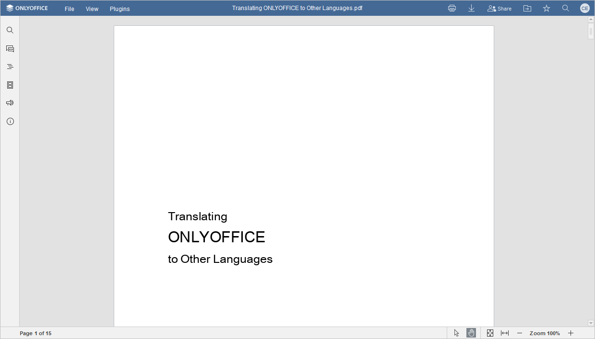
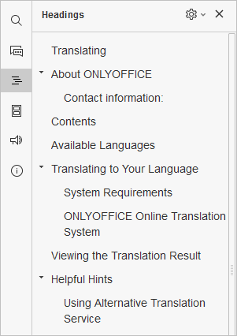
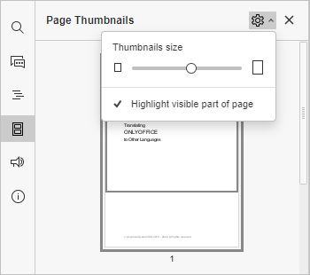

ONLYOFFICE Pregledač dokumenata
Možete koristiti ONLYOFFICE Pregledač dokumenata za otvaranje i navigaciju kroz PDF, XPS i DjVu fajlove.
ONLYOFFICE Pregledač dokumenata omogućava:
- pregled PDF, XPS i DjVu fajlova,
- dodavanje anotacija korišćenjem chat alata,
- navigaciju kroz fajlove pomoću panela za navigaciju sadržaja i sličica stranica,
- korišćenje alata za selektovanje i ruku,
- štampanje i preuzimanje fajlova,
- korišćenje unutrašnjih i spoljašnjih linkova,
-
pristup naprednim podešavanjima editora i pregled sledećih informacija o dokumentu preko kartica Fajl i Prikaz:
- Lokacija (dostupno samo u online verziji) - folder u Documents modulu gde je fajl smešten.
- Vlasnik (dostupno samo u online verziji) - ime korisnika koji je kreirao fajl.
- Postavljeno (dostupno samo u online verziji) - datum i vreme kada je fajl postavljen na portal.
- Statistika - broj stranica, pasusa, reči, simbola, simbola sa razmacima.
- Veličina stranice - dimenzije stranica u fajlu.
- Poslednja izmena - datum i vreme poslednje izmene dokumenta.
- Kreirano - datum i vreme kreiranja dokumenta.
- Aplikacija - aplikacija kojom je dokument kreiran.
- Autor - osoba koja je kreirala dokument.
- PDF proizvođač - aplikacija korišćena za konvertovanje dokumenta u PDF.
- PDF verzija - verzija PDF fajla.
- Označeni PDF - pokazuje da li PDF fajl sadrži oznake.
- Fast Web View - pokazuje da li je Fast Web View omogućen za dokument.
- Korišćenje dodataka (plugins):
- Dostupni u desktop verziji: Translator, Send, Thesaurus.
- Dostupni u online verziji: Controls example, Get and paste html, Telegram, Typograf, Count word, Speech, Thesaurus, Translator.
ONLYOFFICE Pregledač dokumenata interfejs:

-
Gornja alatna traka omogućava pristup Fajl, Prikaz i Dodaci karticama, kao i sledećim ikonama:
Štampaj omogućava štampanje fajla;
Preuzmi omogućava preuzimanje fajla na računar;
Deljenje (dostupno u online verziji) omogućava upravljanje korisnicima koji imaju pristup fajlu: pozivanje novih korisnika sa pravima uređivanja, čitanja, komentarisanja, popunjavanja obrazaca ili pregleda dokumenta, ili ograničavanje pristupa.
Otvori lokaciju fajla u desktop verziji otvara folder gde je fajl smešten u File explorer. U online verziji otvara folder u Documents modulu u novoj kartici pregledača;
Označi kao omiljeno / Ukloni iz omiljenih (dostupno u online verziji) klikom na praznu zvezdu dodajete fajl u omiljene radi lakšeg pronalaženja, ili klikom na popunjenu zvezdu uklanjate fajl iz omiljenih. Fajl ostaje na originalnoj lokaciji;
Korisnik prikazuje ime korisnika kada pređete mišem preko ikone.
Pretraga omogućava pretragu dokumenta po rečima ili simbolima.
- Status bar na dnu ONLYOFFICE Pregledača dokumenata prikazuje broj stranica i statusne poruke. Sadrži sledeće alate:
Selektovanje omogućava selektovanje teksta u fajlu.
Ruka omogućava pomeranje i skrolovanje stranica.
Prilagodi stranici menja veličinu stranice tako da cela bude vidljiva na ekranu.
Prilagodi širini menja veličinu stranice tako da se uklopi u širinu ekrana.
Zumiranje omogućava uvećavanje i smanjivanje stranice.
-
Levi panel sadrži sledeće ikone:
- - omogućava korišćenje Alata za pretragu i zamenu,
- - (dostupno u online verziji) otvara Chat panel,
-
- otvara panel Naslovi sa listom svih naslova i njihovim nivoima. Klikom na naslov prelazite direktno na određenu stranicu.

Klikom na ikonu Podešavanja desno od panela Naslovi birate opcije:
- Proširi sve - proširuje sve nivoe naslova u panelu.
- Sakrij sve - skuplja sve nivoe naslova osim nivo 1.
- Proširi do nivoa - proširuje strukturu naslova do izabranog nivoa.
- Veličina fonta – podešava veličinu fonta teksta u panelu Naslovi sa preset opcijama: Mali, Srednji, Veliki.
- Prelomi dugačke naslove – prelama dugačke naslove.
Za ručno proširivanje ili skupljanje pojedinačnih nivoa, koristite strelice levo od naslova.
Za zatvaranje panela Naslovi, kliknite ponovo na ikonu Naslovi u levom panelu.
-
- prikazuje sličice stranica za brzu navigaciju. Klikom na u panelu Sličice stranica pristupate Podešavanjima sličica:

- Pomerite klizač da odaberete veličinu sličica,
- Istakni vidljivi deo stranice je aktivno po defaultu da označi deo stranice trenutno prikazan na ekranu. Klikom se isključuje.
Za zatvaranje panela Sličice stranica, kliknite ponovo na ikonu Sličice stranica u levom panelu.
- - omogućava kontakt sa podrškom,
- - (dostupno u online verziji) prikazuje informacije o programu.